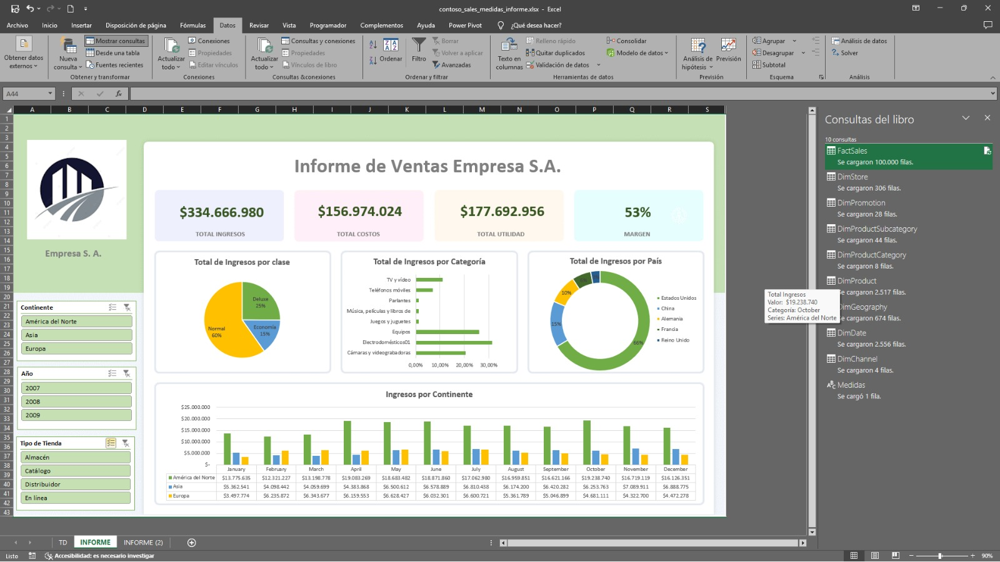
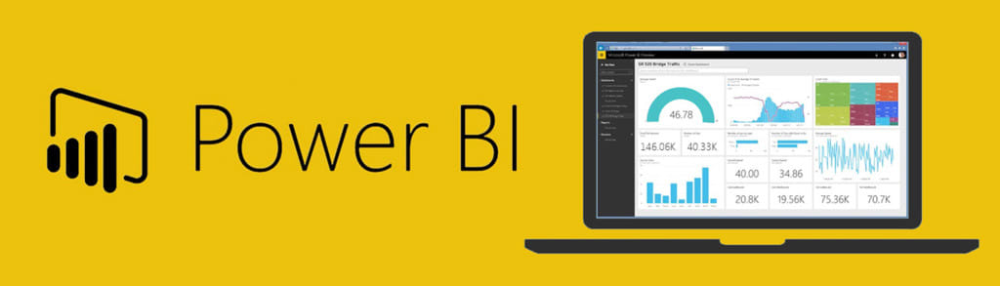
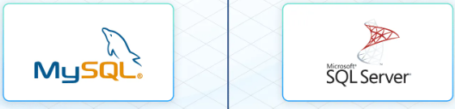
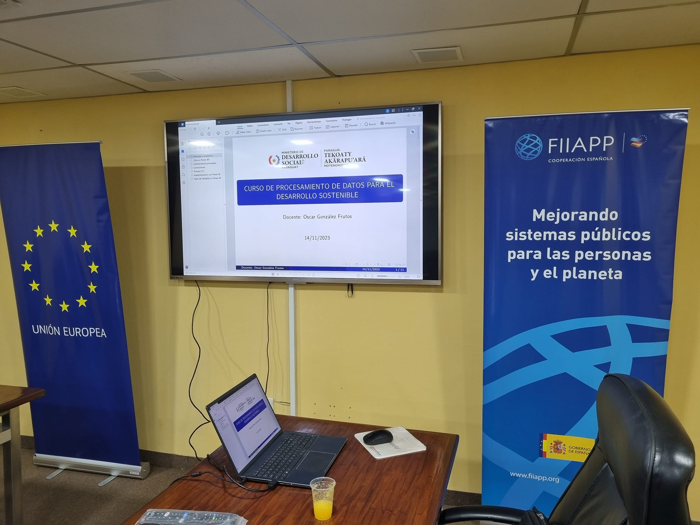
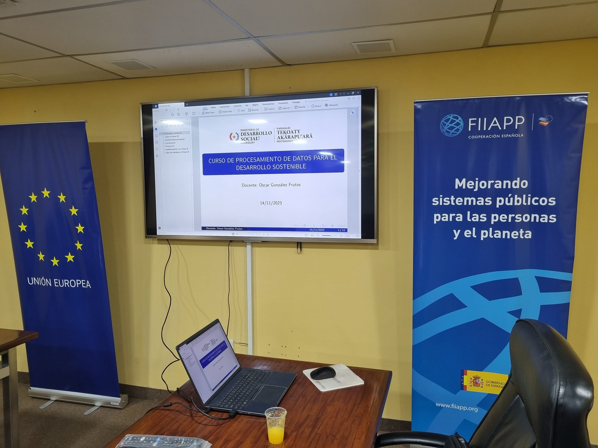
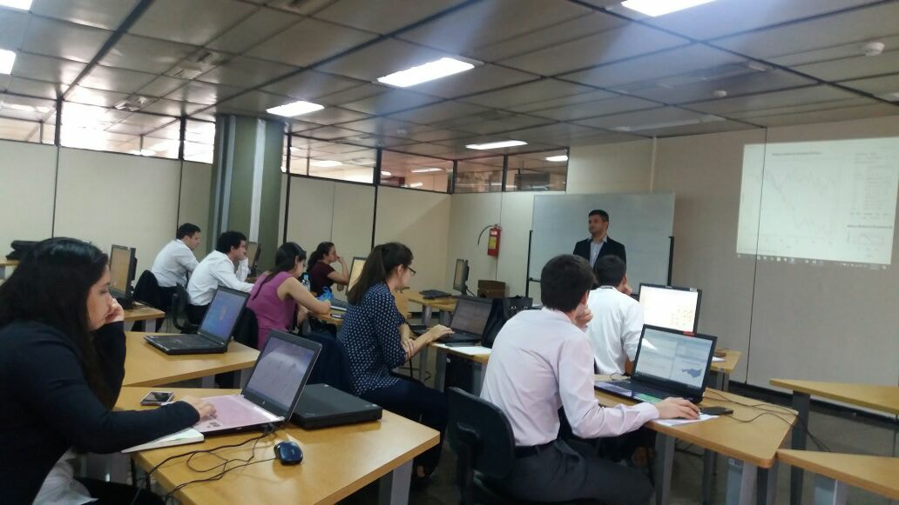
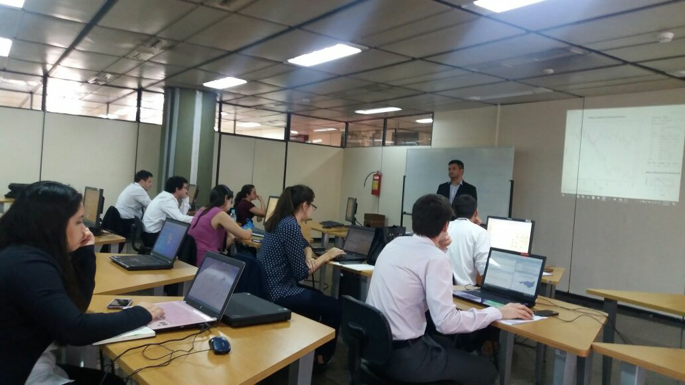

En el Instituto Técnico Superior Centro de Investigación y Capacitación Paraguay (CICAPY), nos especializamos en ofrecer
educación virtual de alta calidad. Nuestro enfoque está en tecnologías modernas para el análisis de datos,
potenciando tus habilidades para enfrentar los desafíos del mundo profesional.
CICAPY fue creado por la Resolución 848/2022 del
Ministerio de Educación y Ciencias, consolidando nuestro compromiso con la educación de excelencia
en Paraguay.
Misión
Formar profesionales altamente capacitados mediante programas educativos virtuales innovadores en tecnologías
de análisis de datos, promoviendo la transformación digital y la toma de decisiones basada en datos en Paraguay
y más allá.
Visión
Ser reconocidos como un referente regional en educación virtual, transformando el aprendizaje en análisis de
datos y contribuyendo al desarrollo tecnológico y profesional de nuestros estudiantes.
📊 Capacitación empresarial a medida: online, in-company o híbrida.
Ofrecemos programas de formación diseñados para equipos que buscan potenciar sus capacidades en Análisis de Datos e Inteligencia de Negocios mediante el uso de herramientas líderes del mercado:
R, Python, Power BI, SQL y Excel. Las capacitaciones pueden realizarse 100% online o in-company, adaptadas a las necesidades específicas de tu organización.
📌 Programas personalizados según el sector y los datos reales de tu empresa.
🧠 Formación práctica, enfocada en el análisis de datos, automatización de reportes y generación de dashboards.
🎯 Modalidad online en vivo o presencial en tu oficina (in-company).
📁 Material de clase, datasets y grabaciones disponibles para los participantes.
✅ Ideal para equipos de análisis, finanzas, marketing, RRHH, operaciones y más.
👩🏫 Capacitador
Nombre del Docente: Oscar González Frutos
Lic. en: Matemática Estadística FACEN - UNA.
MSc. en: Estadística Aplicada - Universidad de Granada, España (Becal).
Experiencia: Más de 10 años de experiencia en Análisis de Datos y en la enseñanza de herramientas como: SQL, Excel, Power BI, R y Python.
Certificaciones: Certificate in Data Science con R - HarvardX (Harvard University - En Línea).
Pasión por enseñar: Comprometido en ayudarte a dominar habilidades clave y aplicarlas en proyectos reales.
Experiencia docente: Ha impartido capacitaciones en herramientas de análisis de datos (R, Python, Power BI) en instituciones públicas como el Banco Central del Paraguay (BCP), Itaipú Binacional, DGEEC, MEC, FACEN, UNA y el Ministerio de Desarrollo Social; y en organizaciones privadas como Automotor, Banco Familiar, Bancoop y Sueñolar.
Este curso está diseñado para adaptarse a tus necesidades. Se ofrece en modalidad sincrónica y asincrónica,
lo que te permite participar en las clases en vivo o seguir las grabaciones a tu propio ritmo.
Además, podrás completar las tareas y ejercicios cuando más te convenga.
Este curso está diseñado para capacitarte en el uso avanzado de Excel, incluyendo herramientas como Power Query y Power Pivot, para el análisis y la visualización de datos. Aprenderás a importar datos desde múltiples fuentes, transformarlos, modelarlos y crear informes dinámicos y dashboards interactivos.
✅ Metodología
Clases en vivo a través de Zoom, facilitando la interacción directa con el instructor.
Clases grabadas disponibles para consulta posterior.
Actividades prácticas: Ejercicios y proyectos aplicados.
Asesoramiento personalizado durante y después de las sesiones.
📅 Fecha de Capacitación en Vivo:
Fechas: mayo a junio de 2025.
Horario: 19:30 a 21:40 hs.
✅ Costo del Curso
Costo del Curso: 300.000 Gs (Pago Único). Incluye materiales, grabaciones y certificado.
🎉 ¡Descuento para grupos! Si te inscribes en grupo, obtén un descuento especial. ¡Contáctanos para más información!
2 personas: 250.000 Gs c/u
3 personas: 200.000 Gs c/u
4 o más: 150.000 Gs c/u
✅ Formas de Pago
Transferencia o depósito bancario:
🏦 Banco Itaú:
Cta. N°: 720005407
Titular: Oscar Gonzalez Frutos
CI: 3584172
Alias: 3584172
💳 Pago con Tarjeta de Crédito/Débito:
Podés abonar mediante POS Virtual. Consultá para recibir el enlace de pago.
✅ Para confirmar tu inscripción, por favor envía el comprobante al siguiente número: 0983 352 932
👩🏫 Conoce a tu Docente
Nombre del Docente: Oscar González Frutos
Lic. en: Matemática Estadística FACEN - UNA.
MSc. en: Estadística Aplicada - Universidad de Granada, España (Becal).
Experiencia: Más de 10 años de experiencia en Análisis de Datos y en la enseñanza de herramientas como: SQL, Excel, Power BI, R y Python.
Certificaciones: Certificate in Data Science con R - HarvardX (Harvard University - En Línea).
Pasión por enseñar: Comprometido en ayudarte a dominar habilidades clave y aplicarlas en proyectos reales.
Experiencia docente: Ha impartido capacitaciones en herramientas de análisis de datos (R, Python, Power BI) en instituciones públicas como el Banco Central del Paraguay (BCP), Itaipú Binacional, DGEEC, MEC, FACEN, UNA y el Ministerio de Desarrollo Social; y en organizaciones privadas como Automotor, Banco Familiar, Bancoop y Sueñolar.
Parte Introductoria: Funcionalidades Básicas de Excel
Interfaz de Excel: Descripción de las principales pestañas y herramientas, incluyendo la barra de fórmulas y la navegación en hojas de cálculo.
Funciones y Fórmulas Básicas: Uso de funciones como Suma, Promedio, Máximo, Mínimo, referencias absolutas y relativas ($), y fórmulas condicionales como SI, CONTAR.SI, y SUMAR.SI.
Formateo de Datos: Aplicación de estilos de celdas, formatos de números, bordes, filtros y ordenamiento de datos.
Gráficos Básicos: Creación de gráficos de columnas, líneas y circulares, incluyendo ajustes de títulos, ejes y leyendas.
Introducción a Tablas: Creación y manejo de tablas en Excel, aprovechando filtros, estilos y referencias estructuradas.
Power Query
Con Power Query, puede buscar orígenes de datos, realizar conexiones y, a continuación, dar forma a esos datos
(por ejemplo, quitar una columna, cambiar un tipo de datos o combinar tablas) de maneras que se ajusten a sus
necesidades. Después, puede cargar la consulta en Excel para crear gráficos e informes.
Hay cuatro fases principales para usar Power Query:
Conectar: Importe y realice conexiones a datos en la nube, en un servicio o localmente.
Transformar: Dé forma a los datos para satisfacer sus necesidades, mientras que el origen original permanece inalterado.
Combinar: Integre datos desde varios orígenes para obtener una vista única de los datos.
Cargar: Complete la consulta y guárdela en una hoja de cálculo o un modelo de datos.
Tema 1: Introducción y Preparación de Datos con Power Query
Introducción a Power Query y su uso en el análisis de datos.
Importación de datos desde TXT, CSV, Excel y bases de datos.
Transformaciones básicas: limpieza, filtrado y ordenamiento de datos.
Carga de datos procesados a Excel.
Power Pivot
Power Pivot es una herramienta de modelado de datos que permite integrar grandes volúmenes de datos de múltiples
fuentes, establecer relaciones entre ellos y crear cálculos avanzados utilizando DAX (Data Analysis Expressions).
Con Power Pivot, puedes crear modelos de datos robustos y flexibles que mejoran el análisis y la visualización.
Las principales funcionalidades de Power Pivot incluyen:
Integración de Datos: Importa datos de diferentes orígenes y combínalos en un modelo unificado.
Relaciones entre Tablas: Crea relaciones entre múltiples tablas para realizar análisis complejos.
Cálculos Avanzados: Utiliza medidas y columnas calculadas para obtener resultados personalizados con DAX.
Optimización de Modelos: Simplifica y optimiza el modelo para mejorar el rendimiento en análisis y visualizaciones.
Tema 2: Modelado de Datos con Power Pivot
Qué es Power Pivot y cómo usarlo para modelos de datos.
Creación de relaciones entre tablas y jerarquías.
Introducción a DAX: funciones básicas como SUM, AVERAGE y COUNT.
Buenas prácticas para optimizar el modelo de datos.
Tema 3: Cálculos y Análisis Avanzados con DAX
Funciones avanzadas de DAX: CALCULATE, FILTER, ALL.
Optimización del modelo de datos para análisis más complejos.
Tema 4: Visualización y Presentación de Informes
Creación de dashboards en Excel: gráficos avanzados y segmentadores.
Diseño profesional y formateo de informes.
Automatización y actualización automática de datos.
Caso práctico: integración completa del flujo de trabajo.
Ejemplos de Dasboards creados en clase

Business Intelligence con Power BI

Este curso de Power BI está diseñado para adaptarse a tus necesidades. Se ofrece en modalidad sincrónica y asincrónica, lo que te permite participar en las clases en vivo o seguir las grabaciones a tu propio ritmo.
¡No importa si eres principiante o ya tienes experiencia! Este curso está diseñado para ayudarte a mejorar tus habilidades de análisis de datos con Power BI.
🎯 ¿A quién va dirigido este curso?
Profesionales de todas las áreas que necesitan analizar y visualizar datos para tomar mejores decisiones.
Analistas, contadores, ingenieros, administradores y personal de recursos humanos, entre otros, que deseen optimizar sus reportes y automatizar procesos de análisis.
Emprendedores y dueños de negocios que quieran entender el comportamiento de su empresa mediante indicadores visuales.
Estudiantes y recién egresados que buscan adquirir una herramienta valiosa para el mercado laboral.
Personas sin experiencia previa en Power BI, pero con conocimientos básicos de Excel y análisis de datos.
📊 ¿Querés crear un Dashboard como este?
En este curso aprenderás a construir dashboards interactivos como el que ves aquí: visuales profesionales, dinámicos y orientados a la toma de decisiones.
Pago al contado:300.000 Gs (pago único). Incluye materiales, grabaciones y certificado.
🎉 ¡Descuento para grupos! Inscribite con amigos y accedé a precios especiales:
👥 2 personas: 250.000 Gs c/u
👨👩👧👦 3 o más personas: 200.000 Gs c/u
💳 Formas de Pago
Podés realizar el pago mediante alias, transferencia bancaria o tarjeta.
🏦 Ueno Bank (Alias)
Alias: 3584172
Titular: Oscar Gonzalez Frutos
🏦 Banco Itaú (Transferencia)
Cta. N°: 720005407
Titular: Oscar Gonzalez Frutos
CI: 3584172
💳 Tarjeta de Crédito
También podés pagar con tarjeta a través del POS Virtual. Consultanos para recibir tu enlace de pago personalizado. ✔️ Podés abonar en varias cuotas utilizando tarjeta de crédito.
✅ Para confirmar tu inscripción, enviá tu comprobante al WhatsApp: 0983 352 932
📅 Fecha de Capacitación online en Vivo:
Fecha de inicio: Martes 17 junio de 2025.
Horario: 9:00 a 11:30 hs.
Clases: 17, 24 de junio, 1, 8 y 15 de julio
Día: Sábados
📘 Nivel del Curso: ¡Desde Principiante!
Este curso está pensado para que cualquier persona, incluso sin experiencia previa, pueda aprender Power BI desde cero y avanzar hasta un nivel profesional. La estructura es progresiva y se adapta a tu ritmo:
🔰 Nivel Principiante: Ideal si nunca trabajaste con Power BI o análisis de datos. Comenzamos con los conceptos clave y el entorno de trabajo.
⚙️ Nivel Intermedio: Aprendé a transformar datos, modelar relaciones y aplicar técnicas de análisis más profundas.
🚀 Nivel Avanzado: Dominá DAX, inteligencia de tiempo y creá dashboards interactivos de alto impacto.
✅ Metodología
Clases en vivo a través de Zoom, facilitando la interacción directa con el instructor.
Clases grabadas disponibles para consulta posterior.
Actividades prácticas: Ejercicios y proyectos aplicados.
Asesoramiento personalizado durante y después de las sesiones.
✅ Objetivos del Curso
Al finalizar este curso, los participantes serán capaces de:
Descargar, instalar y personalizar el entorno de Power BI.
Importar y transformar datos desde múltiples fuentes utilizando Power Query.
Diseñar modelos de datos eficientes y establecer relaciones entre tablas.
Crear medidas avanzadas y columnas calculadas con el lenguaje DAX.
Diseñar dashboards interactivos y personalizados para la toma de decisiones.
Aplicar herramientas de inteligencia artificial para análisis avanzado.
📊Contenido del Curso
✅ Introducción a Power BI
¿Qué es Power BI?: Es una herramienta de análisis de datos que facilita la creación de informes interactivos y dashboards.
Componentes de Power BI: Incluye Power BI Desktop, Power BI Service, y Power BI Mobile.
Flujo de trabajo: Conectar datos, transformarlos, modelarlos, visualizarlos y luego compartir los informes.
Roles en Power BI: Diferentes tipos de usuarios como desarrolladores, administradores y consumidores de informes.
✅ Trabajar con Power BI Desktop
Qué se puede hacer: Análisis de datos, creación de informes y dashboards.
Entorno de trabajo: Tiene tres vistas principales: Informe, Datos y Modelo.
Cinta de opciones: Herramientas para transformar, modelar y visualizar datos.
Conexión de datos: Se pueden obtener datos desde múltiples fuentes como bases de datos y archivos planos.
Iniciar sesión: Acceder a tus proyectos con la cuenta de Power BI.
✅ Conectar a datos externos
Obtener datos: Power BI se conecta a diversas fuentes de datos externas.
Power Query: Herramienta dentro de Power BI para transformar datos, donde puedes limpiar, filtrar, y modificar los datos.
Conectar y configurar propiedades: Establecer las conexiones adecuadas y controlar la actualización de datos.
✅ Transformar Datos
Limpiar y optimizar: Eliminar columnas innecesarias, ajustar tipos de datos, corregir errores y duplicados.
Crear nuevas columnas: Como columnas calculadas basadas en reglas o ejemplos.
Combinar y agrupar datos: Usar combinaciones de consultas o crear relaciones entre tablas.
Modelado de datos: Organizar las tablas en una estructura eficiente para los informes.
✅ Modelado de Datos con Power BI
Modelo tabular: Power BI usa un modelo tabular basado en relaciones entre tablas.
Relaciones en el modelo: Crear relaciones entre tablas usando claves primarias y foráneas.
Definir propiedades: Personalizar cómo los datos se presentan en el modelo de datos.
✅ Optimización de Modelos
Modelos en estrella y copo de nieve: Técnicas de modelado que optimizan el rendimiento de los informes.
Pasar entre modelos: Convertir un modelo simple a uno más complejo como el esquema en estrella.
Soluciones a problemas de rendimiento: Identificar cuellos de botella en el rendimiento y mejorar los cálculos.
✅ Bases del Lenguaje DAX
DAX (Data Analysis Expressions): Es el lenguaje para crear cálculos y expresiones dentro de Power BI.
Formato y buenas prácticas: Es importante seguir una sintaxis correcta y utilizar comentarios y convenciones de nombres.
Tipos de cálculos: Incluir columnas calculadas, medidas y tablas calculadas.
✅ Crear Componentes con DAX
Medidas vs columnas: Crear medidas dinámicas y evitar el uso de columnas estáticas en los gráficos.
Reutilización de medidas: Las medidas pueden ser reutilizadas en diferentes partes del informe.
Evitar errores: Manejar correctamente errores comunes como la división por cero.
✅ Contextos en DAX
Contextos en DAX: Diferentes tipos de contextos (filtro, fila) que afectan el cálculo de las medidas.
Funciones clave: CALCULATE para modificar contextos, y funciones como ALL para manipular filtros.
Filtrar datos: Crear filtros dinámicos dentro de las visualizaciones usando DAX.
✅ DAX y la Inteligencia de Tiempos
Tabla de calendario: Importante para calcular totales acumulados y comparaciones entre diferentes períodos de tiempo.
Cálculos temporales: Crear medidas para el total acumulado, comparar el año actual con el anterior, y aplicar medias móviles.
✅ Modelado, Visualizaciones y DAX
Errores comunes en las relaciones: Evitar relaciones incorrectas entre tablas que pueden afectar los cálculos.
Jerarquías y roles: Definir correctamente las jerarquías y el comportamiento de las columnas en el modelo.
Visibilidad de elementos: Controlar qué elementos se muestran en las visualizaciones y cómo se organizan.
✅ Crear y Configurar Visualizaciones con Power BI
Tipos de visualizaciones: Power BI ofrece gráficos de barras, líneas, dispersión, mapas y muchos más.
Configuración avanzada: Personalizar visualizaciones mediante formato condicional, interactividad entre gráficos y más.
Interactividad: Permitir que los usuarios filtren datos a través de gráficos, segmentadores y paneles de filtro.
✅ Filtrar Datos en Informes de Power BI
Segmentadores: Son filtros interactivos que permiten a los usuarios ver los datos de manera más específica.
Panel de filtros: Permite aplicar filtros a nivel de página o visualización.
Filtros avanzados con DAX: Crear filtros complejos usando expresiones DAX en los informes.
✅ La Historia de los Datos Contada con Power BI
Narrativa en los informes: Crear una historia coherente a partir de los datos utilizando visualizaciones, marcadores y elementos interactivos.
Diseño de informes: Organizar los informes de manera que sean claros y atractivos visualmente.
Botones y navegación: Usar botones para mejorar la interacción del usuario y crear recorridos entre diferentes partes del informe.
✅ Power BI Más Allá de Power BI Desktop
Servicio Power BI: Publicar informes en la nube para compartirlos y colaborarlos con otros usuarios.
Power BI para móviles: Ver informes en cualquier lugar usando dispositivos móviles.
Power BI Embedded: Integrar informes y dashboards en aplicaciones externas.
Instalación de Power BI Desktop
Pasos para la instalación:
Power BI Desktop:
Descarga el instalador desde el sitio oficial de Power BI Desktop.
Sigue estos pasos:
Haz clic en "Descargar" y selecciona la versión adecuada para tu sistema operativo.
Ejecuta el instalador y sigue las instrucciones en pantalla.
Abre Power BI Desktop y comienza a explorar sus herramientas de visualización de datos.
Sigue el tutorial:
Para una guía detallada sobre cómo instalar y configurar Power BI Desktop, mira el siguiente video.
👩🏫 Conoce a tu Docente
Nombre del Docente: Oscar González Frutos
Lic. en: Matemática Estadística FACEN - UNA.
MSc. en: Estadística Aplicada - Universidad de Granada, España (Becal).
Experiencia: Más de 10 años de experiencia en Análisis de Datos y en la enseñanza de herramientas como: SQL, Excel, Power BI, R y Python.
Certificaciones: Certificate in Data Science con R - HarvardX (Harvard University - En Línea).
Pasión por enseñar: Comprometido en ayudarte a dominar habilidades clave y aplicarlas en proyectos reales.
Experiencia docente: Ha impartido capacitaciones en herramientas de análisis de datos (R, Python, Power BI) en instituciones públicas como el Banco Central del Paraguay (BCP), Itaipú Binacional, DGEEC, MEC, FACEN, UNA y el Ministerio de Desarrollo Social; y en organizaciones privadas como Automotor, Banco Familiar, Bancoop y Sueñolar.
Este curso avanzado de DAX con Power BI y Excel está diseñado para adaptarse a tus necesidades.
Se ofrece en modalidad sincrónica y asincrónica, lo que te permite participar en las clases en vivo
o acceder a las grabaciones para avanzar a tu propio ritmo. Además, podrás realizar los ejercicios y
actividades prácticas en el horario que mejor se ajuste a tu disponibilidad.
Clases en vivo a través de Zoom, facilitando la interacción directa con el instructor.
Clases grabadas disponibles para consulta posterior.
Actividades prácticas: Ejercicios y proyectos aplicados.
Asesoramiento personalizado durante y después de las sesiones.
📅 Fecha de Capacitación en Vivo:
Fechas: 26 de abril, 3, 10 y 17 de mayo de 2025.
Día: Sábados
Horario: 9:00 a 11:30 hs.
💰 Costo del Curso y Descuentos
Costo del Curso: 300.000 Gs (Pago Único). Incluye materiales, grabaciones y certificado.
🎉 ¡Descuento para grupos! Si te inscribís en grupo, obtenés un descuento especial. ¡Contactanos para más información!
2 personas: 250.000 Gs c/u
3 personas o más: 200.000 Gs c/u
✅ Formas de Pago
Transferencia o depósito bancario:
🏦 Banco Itaú:
Cta. N°: 720005407
Titular: Oscar Gonzalez Frutos
CI: 3584172
Alias: 3584172
💳 Pago con Tarjeta de Crédito/Débito:
Podés abonar mediante POS Virtual. Consultá para recibir el enlace de pago.
✅ Para confirmar tu inscripción, por favor envía el comprobante al siguiente número: 0983 352 932
📊Contenido del Curso
🧩 Sesión 1 – Modelado de Datos y Fundamentos Avanzados de DAX
Objetivo: Diseñar un modelo robusto que optimice los análisis de la Empresa SA.
Principios del modelado estrella y buenas prácticas
Relación entre tablas (activa/inactiva) y su impacto en los cálculos
Uso de USERELATIONSHIP, CROSSFILTER, TREATAS
Modelos aplicados a datos de ventas, compras y operaciones
Práctica: construir un modelo representando el flujo de ventas y entregas de Empresa SA
📈 Sesión 2 – Métricas Avanzadas para Análisis de Desempeño
Objetivo: Crear KPIs avanzados que apoyen la toma de decisiones en Empresa SA.
Funciones de cálculo avanzadas: RANKX, DIVIDE, SUMX, VAR
Medidas dinámicas: clientes TOP N, productos estrella, tasas de conversión
Casos específicos: análisis de margen, rentabilidad por línea de producto
Práctica: desarrollar un panel de rendimiento comercial
📆 Sesión 3 – Inteligencia de Tiempo y Contexto en DAX
Objetivo: Aplicar análisis temporales sofisticados para comparativos y tendencias.
Construcción de calendarios y columnas de fecha personalizada
Funciones de inteligencia de tiempo: SAMEPERIODLASTYEAR, DATESMTD, TOTALYTD, DATEADD
Evaluación de contextos con CALCULATE, FILTER, ALL, REMOVEFILTERS
Práctica: comparación YTD/LYTD, ventas acumuladas y rolling averages
⚙️ Sesión 4 – Casos Reales, Optimización y Buenas Prácticas
Objetivo: Aplicar lo aprendido a un caso real de Empresa SA, optimizando el desempeño del modelo.
Análisis de desempeño con Performance Analyzer
Limpieza y optimización de medidas (uso de VAR, simplificación de filtros)
Proyecto final: análisis completo con datos reales/simulados de Empresa SA
Panel financiero
Panel de operaciones/logística
Panel de ventas y forecast
Tips para compartir modelos entre Excel y Power BI
📁 Material Incluido:
Archivos de práctica en Excel y Power BI
Presentaciones en PDF por sesión
Guía rápida de funciones DAX clave
Proyecto final con retroalimentación
Grabación de todas las sesiones en vivo
👩🏫 Conoce a tu Docente
Nombre del Docente: Oscar González Frutos
Lic. en: Matemática Estadística FACEN - UNA.
MSc. en: Estadística Aplicada - Universidad de Granada, España (Becal).
Experiencia: Más de 10 años de experiencia en Análisis de Datos y en la enseñanza de herramientas como: SQL, Excel, Power BI, R y Python.
Certificaciones: Certificate in Data Science con R - HarvardX (Harvard University - En Línea).
Pasión por enseñar: Comprometido en ayudarte a dominar habilidades clave y aplicarlas en proyectos reales.
Experiencia docente: Ha impartido capacitaciones en herramientas de análisis de datos (R, Python, Power BI) en instituciones públicas como el Banco Central del Paraguay (BCP), Itaipú Binacional, DGEEC, MEC, FACEN, UNA y el Ministerio de Desarrollo Social; y en organizaciones privadas como Automotor, Banco Familiar, Bancoop y Sueñolar.
Este curso de Python para Ciencia de Datos está diseñado para enseñarte cómo utilizar Python en el análisis y procesamiento de datos.
Aprenderás a trabajar con bibliotecas esenciales como pandas, matplotlib y scikit-learn para manipular datos, visualizarlos y aplicar modelos de machine learning.
Puedes participar en modalidad sincrónica y asincrónica, adaptándose a tus necesidades de tiempo.
Este curso es ideal tanto para principiantes que desean iniciar en la ciencia de datos como para profesionales que buscan mejorar sus habilidades en análisis de datos y machine learning utilizando Python.
¡Inicia tu viaje en el análisis de datos con Python y lleva tus habilidades al siguiente nivel!
Las sesiones en vivo se llevarán a cabo en las siguientes fechas:
3 de junio de 2025
10 de junio de 2025
17 de junio de 2025
24 de junio de 2025
1 de julio de 2025
Días y Horarios: Martes de 19.30 a 21.30hs
✅ Costo del Curso
Costo del Curso: 250.000 Gs (Pago Único). Incluye materiales, grabaciones y certificado.
🎉 ¡Descuento para grupos! Si te inscribes en grupo, obtén un descuento especial. ¡Contáctanos para más información!
2 personas: 200.000 Gs c/u
3 personas o más: 150.000 Gs c/u
💳 Formas de Pago
Podés realizar el pago mediante alias, transferencia bancaria o tarjeta.
🏦 Ueno Bank (Alias)
Alias: 3584172
Titular: Oscar Gonzalez Frutos
🏦 Banco Itaú (Transferencia)
Cta. N°: 720005407
Titular: Oscar Gonzalez Frutos
CI: 3584172
💳 Tarjeta de Crédito
También podés pagar con tarjeta a través del POS Virtual. Consultanos para recibir tu enlace de pago personalizado. ✔️ Podés abonar en varias cuotas utilizando tarjeta de crédito.
✅ Para confirmar tu inscripción, enviá tu comprobante al WhatsApp: 0983 352 932
✅ Metodología
Clases en vivo a través de Zoom, facilitando la interacción directa con el instructor.
Clases grabadas disponibles para consulta posterior.
Actividades prácticas: Ejercicios y proyectos aplicados.
Asesoramiento personalizado durante y después de las sesiones.
👩🏫 Conoce a tu Docente
Nombre del Docente: Oscar González Frutos
Lic. en: Matemática Estadística FACEN - UNA.
MSc. en: Estadística Aplicada - Universidad de Granada, España (Becal).
Experiencia: Más de 10 años de experiencia en Análisis de Datos y en la enseñanza de herramientas como: SQL, Excel, Power BI, R y Python.
Certificaciones: Certificate in Data Science con R - HarvardX (Harvard University - En Línea).
Pasión por enseñar: Comprometido en ayudarte a dominar habilidades clave y aplicarlas en proyectos reales.
Experiencia docente: Ha impartido capacitaciones en herramientas de análisis de datos (R, Python, Power BI) en instituciones públicas como el Banco Central del Paraguay (BCP), Itaipú Binacional, DGEEC, MEC, FACEN, UNA y el Ministerio de Desarrollo Social; y en organizaciones privadas como Automotor, Banco Familiar, Bancoop y Sueñolar.
Sesión 1: Introducción a Python y Fundamentos para Ciencia de Datos
Configuración del entorno: Instalación de Python (Anaconda/Jupyter Notebook) y Google Colab como alternativa.
Fundamentos de Python: Estructuras de datos (listas, diccionarios, tuplas), operaciones básicas y funciones.
Introducción a la ciencia de datos: Conceptos clave (datos estructurados, no estructurados) y el ciclo de vida de un proyecto de ciencia de datos.
Primeros pasos con librerías: Introducción a pandas para manejo de datos e importación desde Excel y CSV.
Ejercicio práctico: Limpieza básica de un dataset de ventas (valores nulos, duplicados, tipos de datos).
Sesión 2: Exploración y Análisis de Datos
Visualización de datos: Introducción a matplotlib y seaborn con gráficos básicos como histogramas, dispersión, barras y cajas.
Análisis exploratorio de datos (EDA): Estadísticas descriptivas (media, mediana, moda, desviación estándar) e identificación de patrones y outliers.
Transformación de datos: Filtrado, agrupamiento y operaciones matemáticas con pandas, incluyendo la creación de nuevas variables.
Ejercicio práctico: Analizar un dataset de índices económicos (PIB, IDH, inflación).
Sesión 3: Introducción a Machine Learning
Fundamentos de Machine Learning: Diferencias entre aprendizaje supervisado y no supervisado. Flujo de trabajo (entrenamiento, validación, prueba).
Modelos básicos supervisados: Introducción a scikit-learn, regresión lineal y clasificación.
Preparación de datos para modelos: Normalización, codificación y división en conjuntos de entrenamiento y prueba.
Ejercicio práctico: Crear un modelo de regresión lineal para predecir el precio de una vivienda.
Sesión 4: Proyecto Final e Interpretación de Resultados
Trabajo con datasets reales: Selección de un dataset del mundo real (Kaggle u otra fuente pública) y definición del problema.
Desarrollo del proyecto: Limpieza, análisis, visualización y construcción de un modelo simple.
Presentación de resultados: Creación de visualizaciones efectivas y reporte con gráficos y métricas clave.
Ejercicio práctico: Resolver un caso práctico integrando todas las herramientas aprendidas.
Modelo de Certificado
Ciencia de Datos con R
Este Curso de Ciencia de Datos con R está diseñado para enseñarte cómo utilizar R en el análisis y procesamiento de datos.
Aprenderás a trabajar con paquetes esenciales como dplyr, ggplot2 y caret para manipular datos, visualizarlos y aplicar modelos de machine learning.
Puedes participar en modalidad sincrónica y asincrónica, adaptándose a tus necesidades de tiempo.
Este curso es ideal tanto para principiantes que desean iniciar en la ciencia de datos como para profesionales que buscan mejorar sus habilidades en análisis de datos y machine learning utilizando R.
¡Inicia tu viaje en el análisis de datos con R y lleva tus habilidades al siguiente nivel!
✅ Fechas de Capacitación en Vivo
Las sesiones en vivo se llevarán a cabo en las siguientes fechas:
Costo del Curso: 300.000 Gs (Pago Único). Incluye materiales, grabaciones y certificado.
🎉 ¡Descuento para grupos! Si te inscribes en grupo, obtén un descuento especial. ¡Contáctanos para más información!
2 personas: 250.000 Gs c/u
3 personas: 200.000 Gs c/u
4 o más: 150.000 Gs c/u
✅ Metodología
Clases en vivo a través de Zoom, facilitando la interacción directa con el instructor.
Clases grabadas disponibles para consulta posterior.
Actividades prácticas: Ejercicios y proyectos aplicados.
Asesoramiento personalizado durante y después de las sesiones.
👩🏫 Conoce a tu Docente
Nombre del Docente: Oscar González Frutos
Lic. en: Matemática Estadística FACEN - UNA.
MSc. en: Estadística Aplicada - Universidad de Granada, España (Becal).
Experiencia: Más de 10 años de experiencia en Análisis de Datos y en la enseñanza de herramientas como: SQL, Excel, Power BI, R y Python.
Certificaciones: Certificate in Data Science con R - HarvardX (Harvard University - En Línea).
Pasión por enseñar: Comprometido en ayudarte a dominar habilidades clave y aplicarlas en proyectos reales.
Experiencia docente: Ha impartido capacitaciones en herramientas de análisis de datos (R, Python, Power BI) en instituciones públicas como el Banco Central del Paraguay (BCP), Itaipú Binacional, DGEEC, MEC, FACEN, UNA y el Ministerio de Desarrollo Social; y en organizaciones privadas como Automotor, Banco Familiar, Bancoop y Sueñolar.
1. Introducción a R como Lenguaje de Ciencia de Datos
Historia y desarrollo de R: Diseñado para el análisis estadístico, R ofrece funciones y bibliotecas optimizadas para tareas de análisis, visualización y modelado, posicionándose como una herramienta clave en la ciencia de datos.
Ventajas en ciencia de datos: R destaca por su capacidad de manejar tareas estadísticas complejas, crear visualizaciones avanzadas y generar informes reproducibles.
Entorno de desarrollo RStudio: Una plataforma potente que permite trabajar de manera eficiente en proyectos de análisis y ciencia de datos, integrando herramientas esenciales.
2. Manipulación de Datos
Estructuras de datos en R: Introducción a vectores, listas, data frames y matrices, bases fundamentales para la manipulación eficiente de datos en R.
Uso de dplyr y tidyverse: Exploración del tidyverse, un conjunto de paquetes que optimizan el manejo de datos. Enfoque en dplyr para realizar tareas como filtrar, seleccionar, mutar y agrupar datos de forma intuitiva.
3. Visualización de Datos
El paquete ggplot2: Creación de visualizaciones personalizadas utilizando la gramática de gráficos. Aprender a combinar capas, estética y geometría para desarrollar visualizaciones impactantes.
Aplicación en Exploratory Data Analysis (EDA): Uso de visualizaciones para explorar patrones, relaciones y anomalías en los datos de manera rápida y eficiente.
4. Programación Funcional en R
Automatización con funciones: Diseño de funciones personalizadas para reducir la repetición de código y mejorar la eficiencia en los análisis.
Programación funcional con purrr: Uso del paquete purrr para aplicar funciones de manera iterativa sobre estructuras de datos, optimizando procesos y mejorando la gestión de datos.
5. Modelado Estadístico
Modelos de regresión y clasificación: Implementación de modelos como regresión lineal y logística, entre otros modelos predictivos.
Evaluación e interpretación de modelos: Análisis de la precisión, ajuste y estadísticas clave para generar insights útiles en proyectos de ciencia de datos.
6. Documentación y Reportes Reproducibles
Creación de reportes con R Markdown: Generación de documentos reproducibles en formatos como HTML, PDF o Word, integrando código, análisis y visualizaciones.
Buenas prácticas en análisis reproducible: Garantía de transparencia y facilidad para replicar resultados, mejorando la colaboración en proyectos de ciencia de datos.
Modelo de Certificado
✅ Formas de Pago
Puedes realizar tu pago mediante las siguientes opciones:
🏦 Transferencia Bancaria: Banco Continental
Cta. N°: 0130289706
Titular: Oscar Gonzalez Frutos
CI: 3584172
🏦 Transferencia Bancaria: Banco Itaú
Cta. N°: 720005407
Titular: Oscar Gonzalez Frutos
CI: 3584172
📲 Giros Tigo
Número: 0983 352 932
✅ Para confirmar tu inscripción, por favor envía el comprobante al siguiente número: 0983 352 932
SQL Server para Business Intelligence

📅 Fecha de Capacitación en Vivo:
Fecha de Inicio: 18 de junio de 2025.
Días: Miércoles (5 sesiones en vivo)
Horario: 19:30 a 21:30 hs.
✅ Metodología
Clases en vivo a través de Zoom, facilitando la interacción directa con el instructor.
Clases grabadas disponibles para consulta posterior.
Actividades prácticas: Ejercicios y proyectos aplicados.
Asesoramiento personalizado durante y después de las sesiones.
✅ Costo del Curso
Costo del Curso: 350.000 Gs (Pago Único). Incluye materiales, grabaciones y certificado.
🎉 ¡Descuento para grupos! Si te inscribes en grupo, obtén un descuento especial. ¡Contáctanos para más información!
2 personas: 250.000 Gs c/u
3 personas o más: 200.000 Gs c/u
Sección 1: Introducción
¿Qué es MySQL?
Importancia de las bases de datos relacionales en el manejo de datos.
Casos de uso de MySQL en la industria.
Diferencias entre MySQL y otros motores de bases de datos.
Sección 2: Descarga e Instalación de MySQL Server
Guía paso a paso para descargar MySQL Server.
Instalación en Windows, Mac y Linux.
Configuración inicial de MySQL Server.
Resolución de errores comunes durante la instalación.
Sección 3: Desarrollo del Entorno de trabajo en MySQL Workbench
Introducción a MySQL Workbench.
Configuración de conexiones a bases de datos.
Navegación por las herramientas principales de MySQL Workbench.
Primeros pasos: Creación de una base de datos simple.
Sección 4: Desarrollo de nuestra Base de Datos, Tablas, Vistas, Procedimientos...
Diseño y creación de bases de datos.
Uso de comandos CREATE DATABASE y CREATE TABLE.
Tipos de datos en MySQL (VARCHAR, INT, DATE, etc.).
Creación de relaciones entre tablas: Claves primarias y foráneas.
Sección 5: Mantenimiento de datos a las tablas de MySQL
Comandos básicos: INSERT, UPDATE, DELETE.
Uso de transacciones para mantener la integridad de los datos.
Exportación e importación de datos en MySQL.
Resolución de conflictos y manejo de errores.
Sección 6: Operadores y Funciones
Operadores aritméticos, de comparación y lógicos.
Funciones de agregación: SUM(), AVG(), COUNT(), etc.
Funciones de texto: CONCAT(), SUBSTRING(), etc.
Funciones de fecha y hora: NOW(), DATE_FORMAT(), etc.
Sección 7: Creación de Vistas
¿Qué son las vistas en MySQL?
Creación y administración de vistas con CREATE VIEW.
Ventajas y limitaciones del uso de vistas.
Ejemplos prácticos de vistas en escenarios reales.
Sección 8: Trabajaremos con mayor detalle la Sentencia SQL SELECT
Uso avanzado de SELECT: Filtrados con WHERE.
Ordenación de resultados con ORDER BY.
Agrupación de datos con GROUP BY.
Subconsultas y combinaciones (JOIN).
Sección 9: Procedimientos Almacenados
Introducción a los procedimientos almacenados.
Creación y ejecución de procedimientos con CREATE PROCEDURE.
Uso de parámetros en procedimientos.
Casos prácticos de automatización de tareas.
Sección 10: Funciones
Diferencia entre funciones y procedimientos almacenados.
Creación de funciones definidas por el usuario.
Ejemplos de funciones personalizadas para cálculos específicos.
Mejores prácticas en el uso de funciones.
Sección 11: Triggers
¿Qué son los triggers en MySQL?
Creación de triggers con CREATE TRIGGER.
Tipos de triggers: BEFORE y AFTER.
Aplicaciones prácticas de triggers en el manejo de datos.
👩🏫 Conoce a tu Docente
Nombre del Docente: Oscar González Frutos
Lic. en: Matemática Estadística FACEN - UNA.
MSc. en: Estadística Aplicada - Universidad de Granada, España (Becal).
Experiencia: Más de 10 años de experiencia en Análisis de Datos y en la enseñanza de herramientas como: SQL, Excel, Power BI, R y Python.
Certificaciones: Certificate in Data Science con R - HarvardX (Harvard University - En Línea).
Pasión por enseñar: Comprometido en ayudarte a dominar habilidades clave y aplicarlas en proyectos reales.
Experiencia docente: Ha impartido capacitaciones en herramientas de análisis de datos (R, Python, Power BI) en instituciones públicas como el Banco Central del Paraguay (BCP), Itaipú Binacional, DGEEC, MEC, FACEN, UNA y el Ministerio de Desarrollo Social; y en organizaciones privadas como Automotor, Banco Familiar, Bancoop y Sueñolar.
Puedes realizar tu pago mediante las siguientes opciones:
🏦 Transferencia Bancaria: Banco Continental
Cta. N°: 0130289706
Titular: Oscar Gonzalez Frutos
CI: 3584172
🏦 Transferencia Bancaria: Banco Itaú
Cta. N°: 720005407
Titular: Oscar Gonzalez Frutos
CI: 3584172
📲 Giros Tigo
Número: 0983 352 932
✅ Para confirmar tu inscripción, por favor envía el comprobante al siguiente número: 0983 352 932
Videos
Descubre momentos destacados de nuestros cursos a través de estos videos. Aprende más sobre nuestra metodología y la experiencia educativa que ofrecemos.
Informes
Ejemplos creados en clase. Explora e interactúa con el informe dinámico para descubrir los datos de una forma práctica y visual.
Informes
Ejemplos creados en clase. Explora e interactúa con el informe dinámico para descubrir los datos de una forma práctica y visual.
Fotos
Explora momentos destacados de nuestros cursos anteriores y conoce más sobre nuestra comunidad educativa.
 


 
